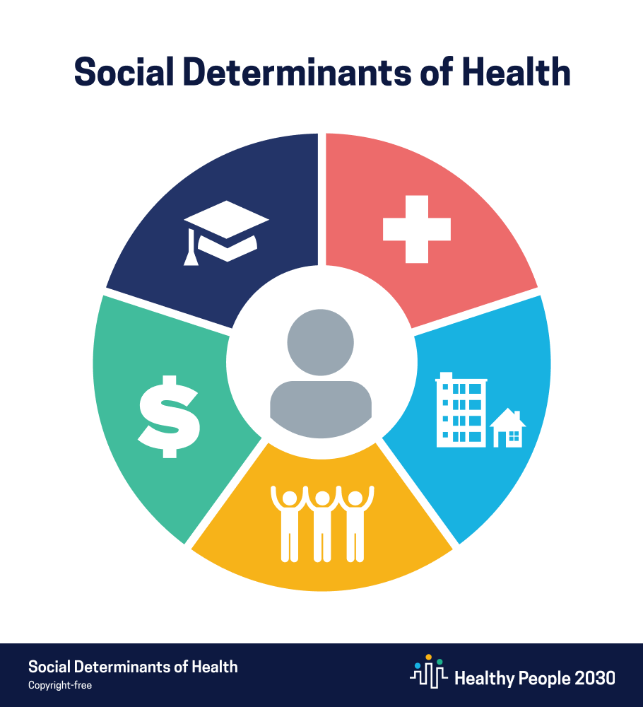

Background
Write paragraph 1 here, about 10 sentences. Cover the topic only: what it is, why it matters, who it affects, and what has already been done. No models, methods, or datasets. Write in third person only.
Write paragraph 2 here, about 10 sentences. Continue with the background of the topic, for example what can still be done. Paragraphs 3, 4, and 5 are added in later project parts.
{kind=link}

Figure 1 goes here. Save the image as
Idea: the Healthy People 2030 social determinants of health graphic
images/intro_1.png.Idea: the Healthy People 2030 social determinants of health graphic
Questions
Ten questions guide the project.
- Do communities with higher child poverty tend to have more babies born at low birth weight?
- Do communities with more uninsured residents tend to have poorer infant health?
- Do communities where more adults report frequent mental distress or depression tend to have more babies born at low birth weight?
- Do communities with higher poverty or unemployment tend to have more adults who report frequent mental distress?
- Are communities with more primary care doctors and mental health providers associated with better infant health and fewer adults reporting frequent mental distress?
- Do communities with higher teen birth rates tend to have more babies born at low birth weight?
- Are communities where more recent mothers are unmarried also communities with higher poverty and more babies born at low birth weight?
- How do metro, small-city, and rural communities differ in infant health, mental health, and access to care?
- Which community conditions, such as income, education, insurance, access to care, and racial and ethnic makeup, are most closely linked to infant health?
- Are there distinct types of communities, based on their economic, health, and care conditions, and do those types differ in infant health?